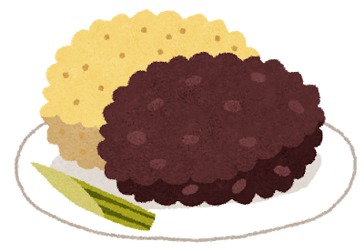

なかにあんこ
どら焼き
-
- 松栄堂 小倉どら焼き
- 一関市に本店を構える和菓子屋。岩手県産小麦「ゆきはるか」を生地に使用したどら焼き。季節限定の商品も多数ある。
-
- 回進堂 小倉どら焼き
- 甘さが控えめなどらやき。店舗のある奥州市江刺区は江刺りんごが有名であり、りんごを使ったどら焼きなども販売している。
-
- 山善菓子舗 もちもち焼き
- 岩手県盛岡市の和菓子店。生地に米粉を使用しており名前の通りもちもちな触感が特徴。
たい焼き
-

- さかえ屋 たい焼き
- 一関市の定食屋。防腐剤、添付剤不使用のこだわりのたい焼き。持ち帰り可能。
-
- ami(むかしたいやき) たい焼き
- 一関市の定食屋。防腐剤、添付剤不使用のこだわりのたい焼き。持ち帰り可能。
-

- 磐井焼
- 一関市にある大判焼きのお店。バター入りと栗入りがある
その他
そとあん
だんご
-

- 郭公屋
- 一関市、厳美渓の空を飛ぶ団子。形が平たい団子は一関市の団子の特徴。
-
- 盛岡だんご結庵
- 盛岡特産品ブランド認証の認定をされているだんご屋。ここのあずきだんごは粒あんが使われている。
-
- 手づくりだんご店 ふるさとや
- たっぷりのあんこが使われておりあんこ好きにはたまらないお団子。
その他
-
- 
- 金勝堂 一関おはぎ
- 午前中に売り切れることも多い地元で人気のおはぎ屋さん。国産小豆と一関産のお米で作った甘さ控えめのおはぎ。
-
- 高島屋 おしるこ
- ボリューム満点のお汁粉。